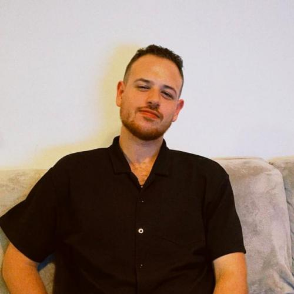
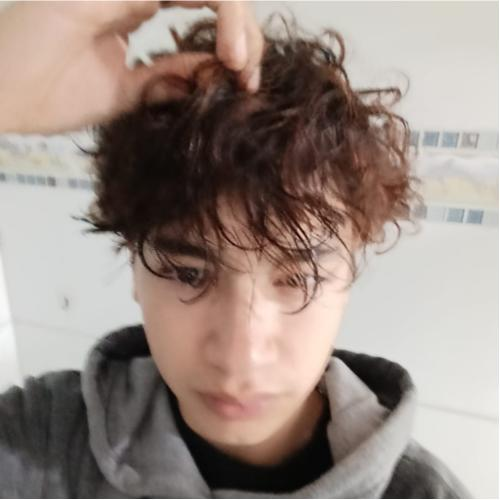
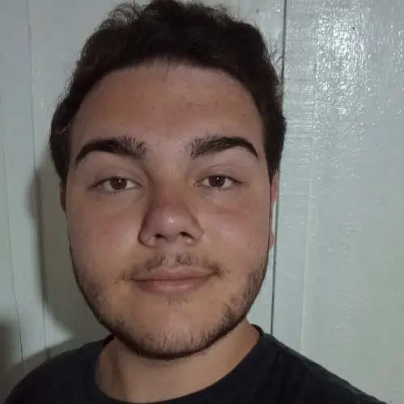

Tenho 25 anos, trabalho na tv evangelizar, estudei engenharia química na pucpr, onde encontrei com a programação e resolvi seguir esse caminho, hoje curso análise e desenvolvimento de sistemas na unicesumar.
Estudante de ADS 3° Período, Formado em Gestão de TI, com experiencia em gerenciamento de projetos.

Especialista em atendimento ao cliente com foco em resultados. Reduzi reclamações repetidas em 15% ao diagnosticar a dor do cliente em 30 segundos. Resiliência, negociação e visão analítica para novos desafios.

Estudante de ADS 3° Período, experiencia em desenvolvimento de software e com gestão de equipe.